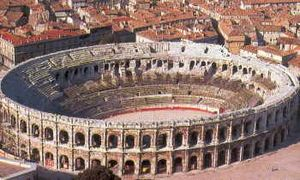
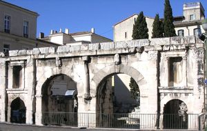
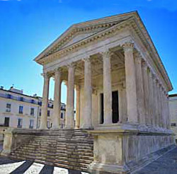
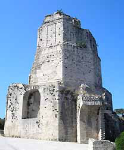
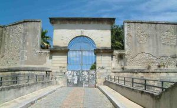
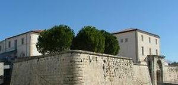
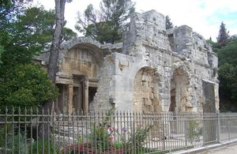
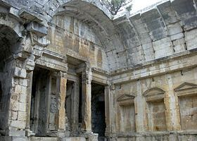
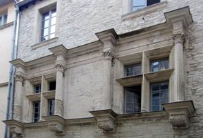

Recensement Jean-Claude Truffet
| Département | 30 — Gard |
| Canton | Nimes |
| Commune | Nimes |
| Type d'édifice | Patrimoine |
| Période d'origine | X-XVI |









NIMES, la fondation de Nîmes remonte à l'Antiquité dénommé Némausus d'où vient le nom de Nîmes. De la période romaine, Nîmes conserve de remarquables et exceptionnels monuments tels que les Arènes qui furent transformés en forteresse au Ve siècle avec petit village intérieur jusqu'au XIXe siècle, la Maison Carrée, temple romain dédié aux petits fils de l'empereur Auguste et la Tour Magne poste de surveillance Pré-Romain longtemps utilisée comme une citadelle, au pied de laquelle se situe le splendide sanctuaire de la Fontaine. Ce riche passé antique lui vaut le surnom de « Rome Française ». Ville à la fois romaine et hispanique, camarguaise, cévenole, à la fois languedocienne et provençale culturellement, fief protestant historique depuis le XVIe siècle, elle s'enorgueillit d'une culture et d'une histoire particulièrement riche et reste une ville à forte identité. Son patrimoine historique et culturel ainsi que la valorisation de son architecture courant de l'époque romaine au XXe siècle a permis à la ville d'obtenir le label de ville d'art et d'histoire. Depuis 2012, date de son inscription sur la liste indicative des villes acceptées à postuler, la ville de Nîmes travaille son dossier de candidature sur le thème « Nîmes, l'Antiquité au présent » pour l'inscription de la cité bimillénaire au Patrimoine Mondial de l'UNESCO. FORT-VAUBAN. Les plans du Fort Vauban ont été réalisés non par Vauban, mais par un de ses émules, Jean-François Ferry, ingénieur du roi Louis XIV. On doit au Nîmois Jacques Cubizol et à l'architecte du roi Jacques Papot la construction de la citadelle. Ayant servi de prison au cours du XVIIIe siècle, elle reçut cette fonction de façon durable à partir de la Révolution. Le Fort a été transformé en site universitaire en 1995.
La Maison Carrée temple romain doit son exceptionnel état de conservation à une utilisation sans interruption depuis le XIe siècle. Inspiré par les temples d'Apollon et de Mars Ultor à Rome, séduit par l'harmonie de ses proportions. Mesure 26 mètres de long sur 15 de large et 17 de hauteur. Le plafond du pronaos date du début du XIXe siècle; la porte actuelle a été réalisée en 1824. Ses merveilleuses frises et colonnes. Transformée en hôtel de ville, en maison d'habitations privées, écurie, en église. Après la Révolution Française, elle est le siège de la première préfecture du Gard, puis aménagée en archives départementales avant d'inaugurer, dès 1823, la création du musée à Nîmes. La Tour Magne est une tour gallo-romaine haute de 18 mètres, vestige de l'ancienne enceinte romaine du Ier siècle avant notre ère, domine l'ensemble de la ville. Elle était en partie composée d'un coeur plein autour duquel s'organisait les pièces d'usage, celles-ci ont depuis longtemps disparues. Cherchant probablement un trésor, la tour Magne est vidée au XVIIe siècle. La tour domine les jardins de la Fontaine sur le mont Cavalier. Transformé en donjon au Moyen-Age. Porte d'Espagne, la Porte de France compte une seule arcade en plein cintre surmontée d'une galerie aveugle décorée de pilastres toscans. Durant l'Antiquité, elle était encadrée de deux tours semi-circulaire. Fort Vauban, ayant servi de prison au cours du XVIIIe siècle, à reçut cette fonction de façon durable à partir de la Révolution, pour devenir en 1820 "Maison Centrale de détention pour le département du Gard" et le rester jusqu'en juin 1991. Le Fort a été transformé en site universitaire en 1995. Arènes, amphithéâtre ovale construit en 100 après J. C. 20000 places sur 34 niveaux de gradins ceci pour les combats de gladiateurs. Temple de Diane, l'édifice se trouve dans les jardins de la fontaine. C'est le monument antique le plus romantique et le plus énigmatique de Nîmes. Associé depuis sa construction au cimetière impérial, on ne connait pas sa fonction exacte: sauna mystique, bibliothèque, lieu de célébration de l'empereur, toujours est-il que le mystère plane encore.
Les Romains
"
Les Arènes, la portes d'Arle, la maison Carrée, la tour Magne, le fort Vauban, le temple de Diane et la façade de la Trésorerie.